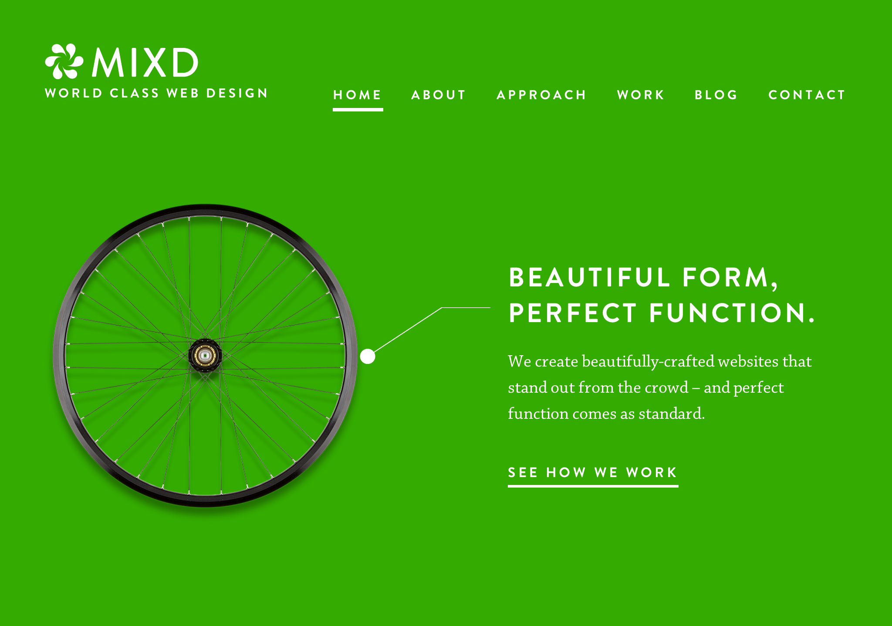

Вёрстка по макету
Сегодня мы сделаем сайт по макету – я опишу процесс того как это сделал бы я и по дороге расскажу обо всех новых штуках которые я буду использовать.
Первое, что нужно сделать — это открыть перед собой макет и внимательно посмотреть на него. Попробовать описать его части в виде HTML.

- Создайте, пожалуйста и новую папку так рядом с папкой
wikipedia, назовите ее design-layout
- Откройте тесктовый редактор (sublime text 2), создайте новый файл и сохраните его как
index.html (не забывайте о расширении)
Мы начнем с уже знакомого нам «скелета»:
Давайте набросаем структуру документа. Скопируйте следующий код и вставьте его в элемент body
Результат
Обсудим написанный код. Здесь есть несколько новых элементов.
<nav> – описывает главную секцию навигации на странице<figure> – описывает часть содержимого, иллюстрирующее нашу страницу, подобно блоку с иллюстрацией на книжной или газетной странице<figcaption> – заголовок или легенда нашей иллюстрации
Кроме того, обратите внимание на аттрибут alt (от “alternative”) у элементов img:
<img alt="Mixd Logo"><img alt="Beautiful Form, Perfect Function">
Этот аттрибут используется для того, чтобы браузер имел возможность отобразить какой-то текст вместо картинки, если она не может быть отображена — существуют текстовые бразуеры, скринридеры или например картинка поломана или вы смотрели на этот сайт со своего мобильного телефона и зашли в лифт. Значение этого аттрибута описывает картинку, что увидит пользователь если она загрузится. Кроме того, машины, такие как яндексовский или гугловский поисковые роботы используют эту информацию для того, чтобы знать что на картинке изображено. Если картинка носит не исключтельно декоративный характер, стоит описывать ее смысл в аттрибуте alt
Давайте добавим картинки
Отлично, разметка домашней страницы готова
Раскладка (Layout)
Под раскладкой понимается расположение элементов на странице.
Для понимания механизма раскладки нужно понять определение потока
Поток (flow)
Поток — это порядок в котором элементы отображаются и распологаются внутри страницы.
Существует несколько типов элементов и сейчас мы поговорим о двух самых распространенных: инлайн (inline) элементы и блок (block) элементы.
Блоки — это элементы которые можно представить в виде контейнеров и они разделяют документ на какие-то части. Блоками по-умолчанию будут не только элементы section и header о которых мы говорили, но и p, и h1. Блоки обычно являются «родительскими» для инлайн-элементов.
Инлайн — как следует из названия, это элементы которые находятся «в строке» и о них можно думать как о «словах» в предложении.
По умолчанию, в потоке блоки занимают всю ширину родительского элемента (если элемент является дочерним элементу body то он займет ширину окна) и идут один за одним сверху вниз в том же порядке, в котором они появляются в коде HTML.
Инлайны в потоке ведут себя как слова, то есть занимают только ширину своего содержимого и следуют один за одним слева направа
Важно! Мы можем задавать размеры (свойства height и width) только блокам — на инлайн элементы размеры не действуют, их размер зависит от их текстового содержимого
Несмотря на то, что у всех элементов имеется принадлежность к блокам или инлайнам по-умолчанию, мы можем контролировать то, как они будут вести себя при помощи CSS свойства display:
strong {
display: block;
}
section {
display: inline;
}
Если бы мы написали код как в этом примере, то все элементы strong стали бы вести себя в потоке как блоки и заняли бы всю ширину своего родительского элемента, а section наоборот сжались бы по ширине.
Раскладка хэдера и позиционирование
Если посмотреть на верхнюю часть нашей страницы, мы можем увидеть что два блока распологаются слева и справа — добьемся того же результата
Структура элементов
Стили
header {
position: relative;
height: 270px;
}
header .logo {
position: absolute;
left: 0;
top: 0;
}
header nav {
position: absolute;
right: 0;
top:0;
}
Результат
Мы использовали новый аттрибут и новый тип селектора: class="logo" и header .logo
Аттрибут class используется для того, чтобы выделять в группы один или более элементов. Если у элемента-(ов) объявлен класс, мы можем выбрать этот или эти элементы при помоще селектора с точкой: .classname. Таким образом, мы можем группировать и применять стили к элементам не только в зависимости от названия элемента, но и полностью по своему желанию.
Позиционирование
Кроме того, мы использовали несколько новых свойств, а именно
position: relative; – это свойство необходимо для того, чтобы в последствие мы могли позиционировать элементы внутри этого родителя-
position: absolute; – элемент будет позиционироваться абсолютно при помощи свойств top, right, bottom и left внутри ближайшего родителя у которого задано свойство position: relative либо относительно всего окна браузера, если таких элементов нету.
Для того, чтобы прижать элемент к правому краю, можно задать right: 0 и так же для левого края, верхней или нижней границы (но используя соответствующие свойства left, top и bottom)